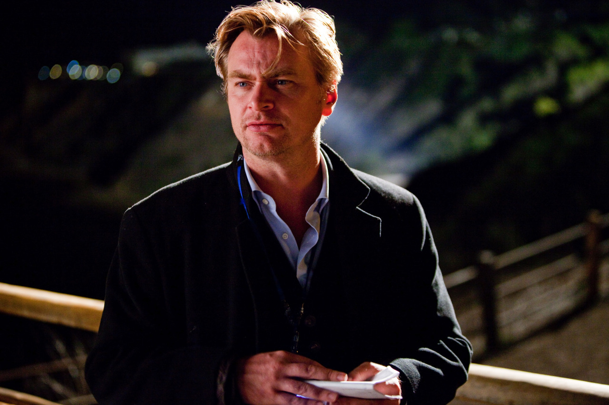

Inception was first developed by Christopher Nolan, based on the notion of "exploring the idea of people sharing a dream space - entering a dream space and sharing a dream. That gives you the ability
to access somebody’s unconscious mind. What would that be used and abused for?". Furthermore, he thought "being able to extract information from somebody’s brain would be the obvious use of that because obviously any other system where
it’s computers or physical media, whatever – things that exist outside the mind – they can all be stolen ... up until this point, or up until this movie I should say, the idea that you could actually steal something from somebody’s head
was impossible. So that, to me, seemed a fascinating abuse or misuse of that kind of technology".
He had thought about these ideas on and off since he was 16 years old, intrigued by how he would wake up and then, while falling
back into a lighter sleep, hold on to the awareness that he was dreaming, a lucid dream. He also became aware of the feeling that he could study the place and alter the events of the dream. He said, "I tried to work that idea of manipulation
and management of a conscious dream being a skill that these people have. Really the script is based on those common, very basic experiences and concepts, and where can those take you? And the only outlandish idea that the film presents,
really, is the existence of a technology that allows you to enter and share the same dream as someone else".
Initially, Nolan wrote an 80-page treatment about dream-stealers. Originally, Nolan had envisioned Inception as a horror film, but eventually wrote it as a heist film even though he found that "traditionally [they] are very deliberately
superficial in emotional terms.". Upon revisiting his script, he decided that basing it in that genre did not work because the story "relies so heavily on the idea of the interior state, the idea of dream and memory. I realized I needed
to raise the emotional stakes.". Nolan worked on the script for nine to ten years. When he first started thinking about making the film, Nolan was influenced by "that era of movies where you had The Matrix (1999), you had Dark City (1998), you had The Thirteenth Floor (1999) and, to a certain extent, you had Memento (2000), too. They were based in the principles that the world around you might not be real."

He soon realized that a film like Inception needed a large budget because "as soon as you’re talking about dreams, the potential of the human mind is infinite. And so the scale of the film has to feel infinite. It has to feel like you could go absolutely anywhere by the end of the film. And it has to work on a massive scale".
After making The Dark Knight, Nolan decided to make Inception and spent six months completing the script. For the director, the key to completing the script was wondering what would happen
if several people shared the same dream. He said,
"Once you remove the privacy, you’ve created an infinite number of alternative universes in which people can meaningfully interact, with validity, with weight, with dramatic consequences".
Leonardo DiCaprio was the first
actor to be cast in the film. He read the script and found it to be "very well written, comprehensive but you really had to have Chris in person, to try to articulate some of the things that have been swirling around his head for the last eight years".
He and Nolan spent months talking about the screenplay. Nolan took a long time re-writing the script in order "to make sure that the emotional journey of his character was the driving force of the movie".
The film cuts to the closing credits from a shot of the top apparently starting to show an ever so faint wobble, inviting speculation about whether the final sequence was reality or another dream. Nolan confirmed that the ambiguity was deliberate, saying,
"I've been asked the question more times than I've ever been asked any other question about any other film I've made... What's funny to me is that people really do expect me to answer it." The film's script concludes with "Behind him, on the table, the spinning top is STILL SPINNING. And we—FADE OUT".
Nolan said, "I put that cut there at the end, imposing an ambiguity from outside the film. That always felt the right ending to me—it always felt like the appropriate 'kick' to me... The real point of the scene—and this is what I tell people—is that Cobb isn't looking at the top. He's looking at his kids. He's left it behind. That's the emotional significance of the thing." Also, Michael Caine explained his interpretation of the ending, saying, "If I'm there it's real, because I'm never in the dream. I'm the guy who invented the dream."
Nolan has said that the film "deals with levels of reality, and perceptions of reality which is something I'm very interested in. It's an action film set in a contemporary world, but with a slight science-fiction bent to it", while
also describing it as "very much an ensemble film structured somewhat as a heist movie. It's an action adventure that spans the globe".